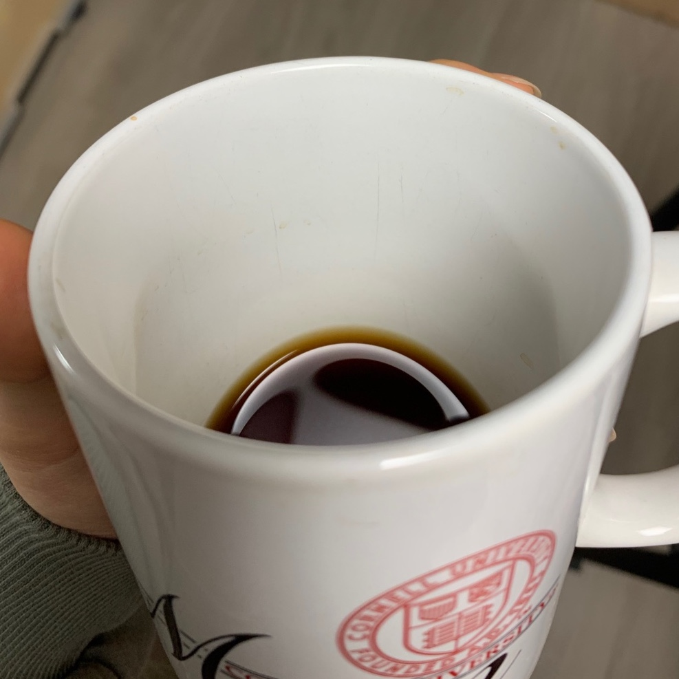
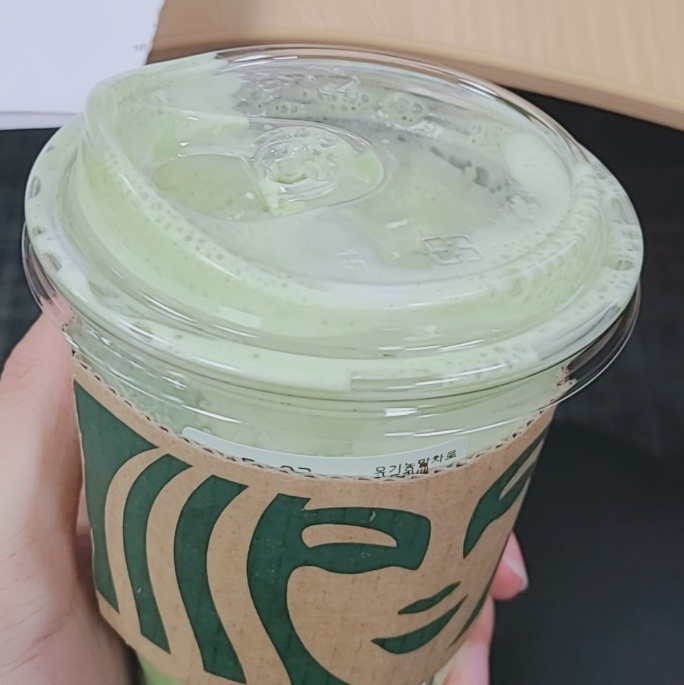
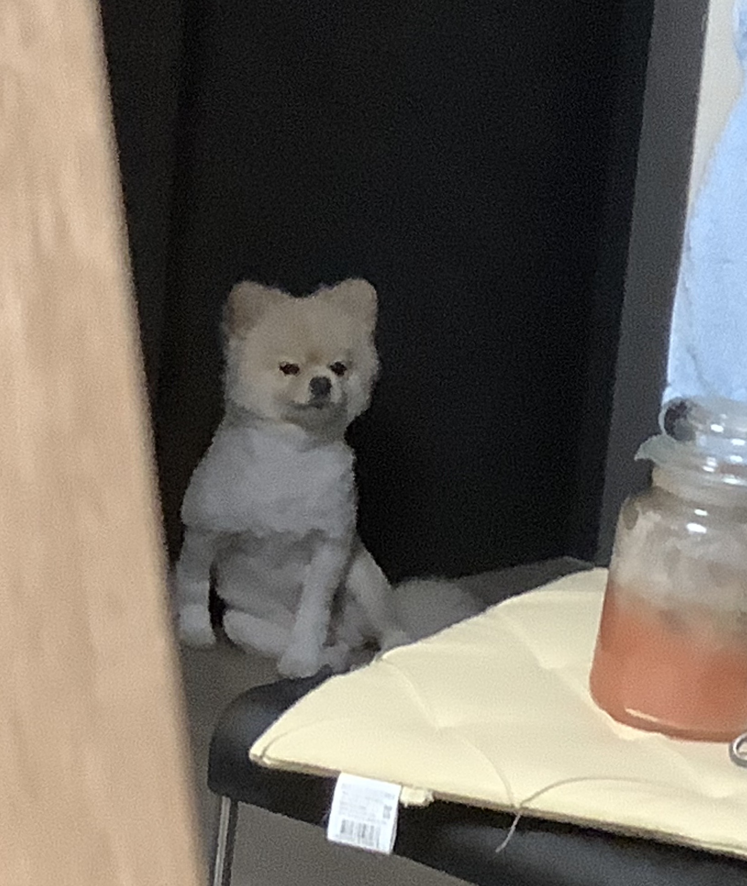

Timeline
사실 커피 사진 아침에 안 찍어뒀는데 저녁에 거의 다 마셨을 때 돼서야 '아 사진 찍을걸!' 싶어서 조금 남은 거 보이게 컵 기울여서 간신히 찍은 아메리카노ㅋㅋ^ 찐뉴요커 ^조선뉴요커
어제 잠들기 전에 라디오처럼 틀어놓은 유튜브에서 생활코딩 채널 어쩌궁저쩌궁 하던거 일어나서 마저 보다가 정신 차려보니 이 분 첫 강좌 다 들어버려서 이거 만들기 시작
월요일에 몇년만에 피아노 쳐봤더니 악보 읽는 법조차 까먹어버린 스스로에게 충격 받고 악보 하나 다운 받아서 감 살리려고 애쓰는중
무슨 곡 치고 있게?
.｡.:*･゜(´＾｀)゜･*:.｡. 철푸덕
기왕 만들기 시작한 거 조금 더 꾸며보고 싶어서 다음 강좌도 다 들어버렸
기왕 css까지 들은 거 조금 더 찾아보면서 꾸미는데 역시 그래봤자 조잡해... 조잡해 조잡해 Ƹ• ͟ʖ•Ʒ
아 눈아파 ㅋㅋㅋㅋㅋㅋㅋㅋㅋㅋ와 눈 아파서 잠깐 쉬다가 계란 먹었는데 완전 맛있게 된 반숙 계란이었어 네넴띤 소스에 찍먹 존맛 ˘◡˘